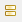

ラベル
ラベルは、トピックに接続ひっつき、簡単な注釈と分類のため使用される小さなテキストタグです。追加されたラベルは、詳細フィルターで利用できます。
簡単な手順でラベルの作成、編集、削除ができます。
ラベルの追加:- トピックを選択します。
- ラベルの編集フィールドを開く二つの方法 :
- ツールバーのラベルアイコンをクリックする。
- ショートカット キーの 'F3' を押下します。
- 編集フィールドに、ラベルのテキストを入力し、'Enter' キーを押します。
メモ: すべてのトピックは複数のラベルを持つことができます。それらを分離するには、カンマ(,)を使用します。ラベルはアルファベット順になります。
ラベルの編集:
- トピックを選択し、ラベルの編集フィールドを開きます。
- 入力済みのラベルを編集し、'Enter' キーを押します。
- トピックを選択し、ラベルの編集フィールドを開きます。
- 入力済みのラベルのテキストを削除し、'Enter' キーを押します。
注: 同時に複数トピックのラベルを作成、編集、削除することはできません。